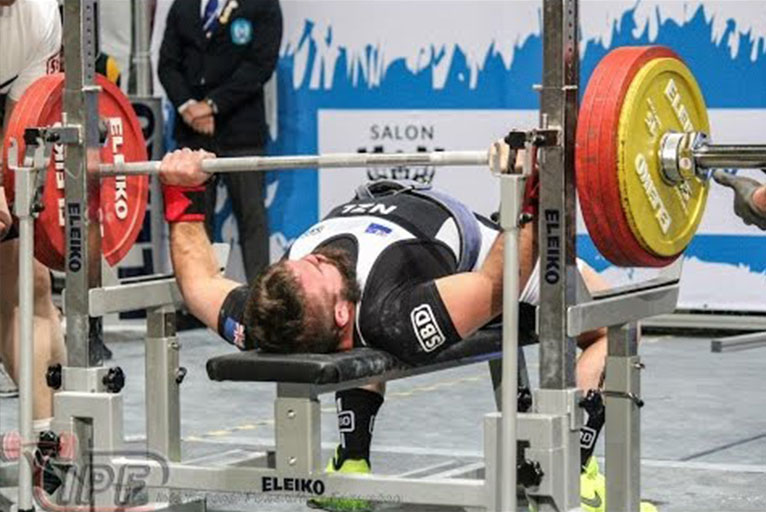

Knäböj
1. Lyftaren skall stå med ansiktet framåt på podiet. Stången skall placeras vågrätt på skuldrorna. Hand och samtliga fingrar skall vara i kontakt med stången (med valfri tumplacering). Händerna kan hållas var som helst på stången innanför eller mot flänsarna på stången och samtliga fingrar måste greppa stången.
2. Efter att ha lyft av stången från ställningen och förflyttat sig bakåt, intar lyftaren en upprätt startposition (en mindre framåtlutning är tillåten) med låsta knän. Startsignal avges när lyftaren står stilla och korrekt med stången i rätt läge. (Lyftaren kan få hjälp av passarna att frigöra stången från ställningen). Huvuddomarens (HD) signal är en nedåtriktad armrörelse samtidigt med ett ljudligt kommando: "Squat"
Före signalen kan lyftaren ändra sin startställning
Om majoriteten av domarna bedömer att lyftaren inte intagit rätt startposition, skall huvuddomaren vänta ca fem sekunder efter det att lyftaren tror sig intagit rätt startposition. Sedan skall han be lyftaren lägga tillbaks stången, med kommandot "replace" tillsammans med en bakåtriktad handrörelse. Lyftaren kan sedan göra ett nytt försök att inta rätt startposition inom den tid han har på sig att påbörja lyftet. Lyftaren kan givetvis, medan huvuddomaren väntar, justera sin startställning för att få sin startsignal. Anledningen till detta är säkerheten för lyftare och passare. Huvuddomaren har rätt att be lyftaren sträcka på sig till rätt startposition.
3. Efter huvuddomarens signal skall lyftaren böja knäna och sänka kroppen så att lårens översida vid höftleden, (vecket), kommer under knäledens översta punkt. (Se figur B sid. 29 position 2, 3 och 4)
Endast ett försök är tillåtet. Försöket anses påbörjat när knäna böjs
4. Från denna ställning, och utan dubbelsatsning eller ytterligare sänkning av stången, skall lyftaren resa sig till upprätt ställning med raka knän och stå still i väntan på signal från huvuddomaren.
5. Signalen består av en bakåtriktad handrörelse samtidigt med ett ljudligt kommando: ”rack”.
6. När detta ges flyttar sig lyftaren framåt och lägger tillbaks stången. Med hänsyn till lyftarens säkerhet får han ta hjälp av passarna för att lägga tillbaks stången.
7. Om lyftaren av någon anledning tappar balansen efter racksignalen så är det ett godkänt lyft, men om lyftaren tappar/släpper stången är det underkänt.
8. Ej fler än fem (5) och minst två (2) skivpåsättare/passare skall befinna sig på flaket. Domarna bestämmer hur många passare som skall finnas på podiet.
Läs mer i regelboken